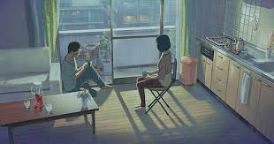
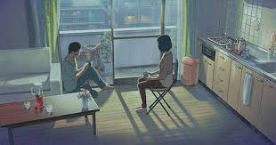

Art Projects
October 1-3, 2019: Garden of Words Scenery Picture

 

This was a really fun, yet ambitious project for myself since I have up until now never done full scenery pictures. I'm still at a point in my drawing where I want to continue learning by copying pictures from their source. On paper, it's a lot easier to do and you can actually even see a transition of how I learned to do rough outlines and work slowly part by part on each section of the drawing. Previously drawings taught me the importance of shading.